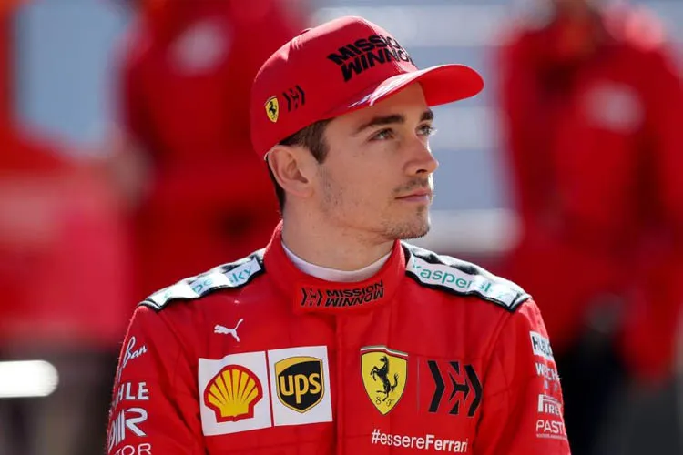

Max Verstappen

Max Emilian Verstappen é um automobilista neerlandês. Ele é piloto de Fórmula 1 desde 2015, tendo feito sua estreia pela equipe Toro Rosso. Foi duas vezes campeão da Fórmula 1 em 2021 e 2022, e terminou em terceiro lugar em 2019 e 2020 com a Red Bull Racing, equipe pela qual corre desde 2016
Charles Leclerc
Charles Marc Hervé Perceval Leclerc, mais conhecido como Charles Leclerc, é um piloto de automóveis monegasco que compete na Fórmula 1 pela equipe Ferrari. Integrou a Ferrari Driver Academy desde 2016, e ganhou o campeonato da GP3 Series em 2016 e o Campeonato de Fórmula 2 da FIA em 2017, pela ART Grand Prix
Sergio Pérez/p>
Sergio Michel Pérez Mendoza é um automobilista mexicano que atua na Formula 1 e atualmente faz parte da grade de pilotos da equipe Red Bull Racing
| Grande Prêmio | Vencedor | Equipe | 1 | Grande Prêmio do Barém | Charles Leclerc | Ferrari | 2 | Grande Prêmio da Arábia Saudita | Max Verstappen | Red Bull Racing-RBPT | 3 | Grande Prêmio da Austrália | Charles Leclerc | Ferrari | 4 | Grande Prêmio da Emília-Romanha | Max Verstappen | Red Bull Racing-RBPT | 5 | Grande Prêmio de Miami | Max Verstappen | Red Bull Racing-RBPT | 6 | Grande Prêmio da Espanha | Max Verstappen | Red Bull Racing-RBPT | 7 | Grande Prêmio de Mônaco | Sergio Perez | Red Bull Racing-RBPT | 8 | Grande Prêmio do Azerbaijão | Max Verstappen | Red Bull Racing-RBPT | 9 | Grande Prêmio do Canadá | Max Verstappen | Red Bull Racing-RBPT | 10 | Grande Prêmio da Grã-Bretanha | Carlos Sainz Jr. | Ferrari | 11 | Grande Prêmio da Áustria | Charles Leclerc | Red Bull Racing-RBPT | 12 | Grande Prêmio da França | Max Verstappen | Red Bull Racing-RBPT | 13 | Grande Prêmio da Hungria | Max Verstappen | Red Bull Racing-RBPT | 14 | Grande Prêmio da Bélgica | Max Verstappen | Red Bull Racing-RBPT | 15 | Grande Prêmio dos Países Baixos | Max Verstappen | Red Bull Racing-RBPT | 16 | Grande Prêmio da Itália | Max Verstappen | Red Bull Racing-RBPT | 17 | Grande Prêmio de Singapura | Max Verstappen | Red Bull Racing-RBPT | 18 | Grande Prêmio do Japão | Max Verstappen | Red Bull Racing-RBPT | 19 | Grande Prêmio dos Estados Unidos | Max Verstappen | Red Bull Racing-RBPT | 20 | Grande Prêmio da Cidade do México | Charles Leclerc | Red Bull Racing-RBPT | 21 | Grande Prêmio de São Paulo | George Russell | Ferrari | 22 | Grande Prêmio de Abu Dhabi | Max Verstappen | Red Bull Racing-RBPT |
|---|